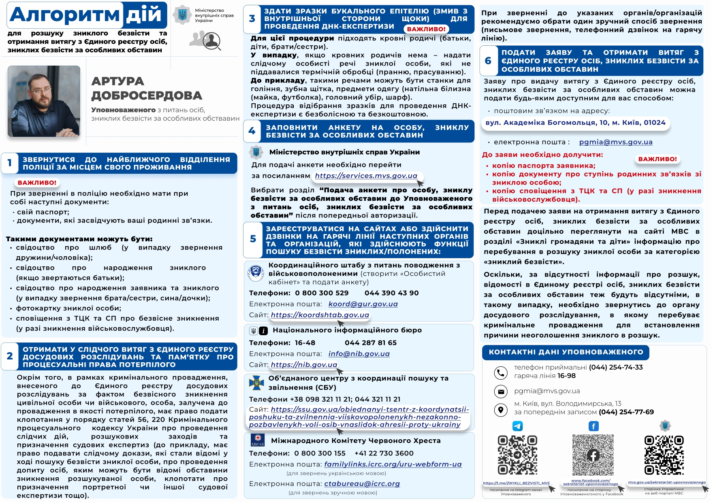

Крок за кроком інструкція для родин, які отримали повідомлення про зникнення близької людини.
| Підрозділ / Посада | Контактна особа | Телефон |
|---|---|---|
| Офіцер по роботі з родинами зниклих безвісти (120 ОБр ТрО) | Сергій Заїчко | +38 063 798 98 93 |
| ЦВС 120 ОБр ТрО | Ігор Буравченков | +38 096 449 20 93 |
| 168 батальйон (в/ч А7334) | Оксана | +38 097 267 88 48 |
| 169 батальйон (в/ч А7335) | Юрій | +38 098 992 25 48 |
| 170 батальйон (в/ч А7336) | Сергій | +38 067 278 01 37 |
| 171 батальйон (в/ч А7337) | Сергій | +38 050 687 58 33 |
| 172 батальйон (в/ч А7338) | Олександр | +38 099 460 77 21 |
| 173 батальйон (в/ч А7339) | Андрій | +38 096 003 22 92 |
| 210 батальйон (в/ч А7379, з 01.05.2025 — у 425 ОШП) | Олександр | +38 097 303 28 58 |
У найближчому оновленні ми додамо шаблони заяв до органів державної влади та інструкції щодо їх заповнення.